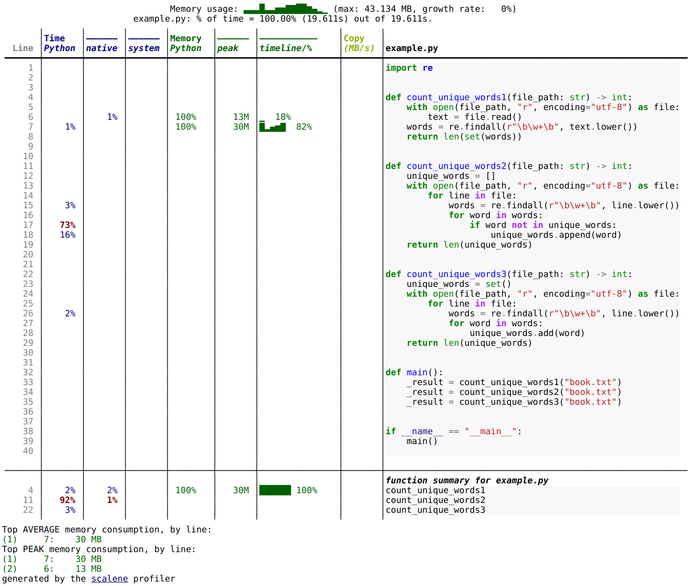

Profiling
Objectives
Understand when improving code performance is worth the time and effort.
Knowing how to find performance bottlenecks in Python code.
Try
scaleneas one of many tools to profile Python code.
Instructor note
Discussion: 20 min
Exercise: 20 min
Should we even optimize the code?
Classic quote to keep in mind: “Premature optimization is the root of all evil.” [Donald Knuth]
Discussion
It is important to ask ourselves whether it is worth it.
Is it worth spending e.g. 2 days to make a program run 20% faster?
Is it worth optimizing the code so that it spends 90% less memory?
Depends. What does it depend on?
Measure instead of guessing
Before doing code surgery to optimize the run time or lower the memory usage, we should measure where the bottlenecks are. This is called profiling.
Analogy: Medical doctors don’t start surgery based on guessing. They first measure (X-ray, MRI, …) to know precisely where the problem is.
Not only programming beginners can otherwise guess wrong, but also experienced programmers can be surprised by the results of profiling.
One of the simplest tools is to insert timers
Below we will list some tools that can be used to profile Python code. But even without these tools you can find time-consuming parts of your code by inserting timers:
import time
# ...
# code before the function
start = time.time()
result = some_function()
print(f"some_function took {time.time() - start} seconds")
# code after the function
# ...
Many tools exist
The list below here is probably not complete, but it gives an overview of the different tools available for profiling Python code.
CPU profilers:
Memory profilers:
memory_profiler (not actively maintained)
Both CPU and memory:
In the exercise below, we will use Scalene to profile a Python program. Scalene is a sampling profiler that can profile CPU, memory, and GPU usage of Python.
Tracing profilers vs. sampling profilers
Tracing profilers record every function call and event in the program, logging the exact sequence and duration of events.
Pros:
Provides detailed information on the program’s execution.
Deterministic: Captures exact call sequences and timings.
Cons:
Higher overhead, slowing down the program.
Can generate larger amount of data.
Sampling profilers periodically samples the program’s state (where it is and how much memory is used), providing a statistical view of where time is spent.
Pros:
Lower overhead, as it doesn’t track every event.
Scales better with larger programs.
Cons:
Less precise, potentially missing infrequent or short calls.
Provides an approximation rather than exact timing.
Analogy: Imagine we want to optimize the London Underground (subway) system
We wish to detect bottlenecks in the system to improve the service and for this we have asked few passengers to help us by tracking their journey.
Tracing: We follow every train and passenger, recording every stop and delay. When passengers enter and exit the train, we record the exact time and location.
Sampling: Every 5 minutes the phone notifies the passenger to note down their current location. We then use this information to estimate the most crowded stations and trains.
Choosing the right system size
Sometimes we can configure the system size (for instance the time step in a simulation or the number of time steps or the matrix dimensions) to make the program finish sooner.
For profiling, we should choose a system size that is representative of the real-world use case. If we profile a program with a small input size, we might not see the same bottlenecks as when running the program with a larger input size.
Often, when we scale up the system size, or scale the number of processors, new bottlenecks might appear which we didn’t see before. This brings us back to: “measure instead of guessing”.
Exercises
Exercise: Practicing profiling
In this exercise we will use the Scalene profiler to find out where most of the time is spent and most of the memory is used in a given code example.
Please try to go through the exercise in the following steps:
Make sure
scaleneis installed in your environment (if you have followed this course from the start and installed the recommended software environment, then it is).Download Leo Tolstoy’s “War and Peace” from the following link (the text is provided by Project Gutenberg): https://www.gutenberg.org/cache/epub/2600/pg2600.txt (right-click and “save as” to download the file and save it as “book.txt”).
Before you run the profiler, try to predict in which function the code (the example code is below) will spend most of the time and in which function it will use most of the memory.
Save the example code as
example.pyand run thescaleneprofiler on the following code example and browse the generated HTML report to find out where most of the time is spent and where most of the memory is used:$ scalene example.py
Alternatively you can do this (and then open the generated file in a browser):
$ scalene example.py --html > profile.html
You can find an example of the generated HTML report in the solution below.
Does the result match your prediction? Can you explain the results?
Example code (example.py):
"""
The code below reads a text file and counts the number of unique words in it
(case-insensitive).
"""
import re
def count_unique_words1(file_path: str) -> int:
with open(file_path, "r", encoding="utf-8") as file:
text = file.read()
words = re.findall(r"\b\w+\b", text.lower())
return len(set(words))
def count_unique_words2(file_path: str) -> int:
unique_words = []
with open(file_path, "r", encoding="utf-8") as file:
for line in file:
words = re.findall(r"\b\w+\b", line.lower())
for word in words:
if word not in unique_words:
unique_words.append(word)
return len(unique_words)
def count_unique_words3(file_path: str) -> int:
unique_words = set()
with open(file_path, "r", encoding="utf-8") as file:
for line in file:
words = re.findall(r"\b\w+\b", line.lower())
for word in words:
unique_words.add(word)
return len(unique_words)
def main():
# book.txt is downloaded from https://www.gutenberg.org/cache/epub/2600/pg2600.txt
_result = count_unique_words1("book.txt")
_result = count_unique_words2("book.txt")
_result = count_unique_words3("book.txt")
if __name__ == "__main__":
main()
Solution
{kind=link}

Result of the profiling run for the above code example. You can click on the image to make it larger.
Results:
Most time is spent in the
count_unique_words2function.Most memory is used in the
count_unique_words1function.
Explanation:
The
count_unique_words2function is the slowest because it uses a list to store unique words and checks if a word is already in the list before adding it. Checking whether a list contains an element might require traversing the whole list, which is an O(n) operation. As the list grows in size, the lookup time increases with the size of the list.The
count_unique_words1andcount_unique_words3functions are faster because they use a set to store unique words. Checking whether a set contains an element is an O(1) operation.The
count_unique_words1function uses the most memory because it creates a list of all words in the text file and then creates a set from that list.The
count_unique_words3function uses less memory because it traverses the text file line by line instead of reading the whole file into memory.
What we can learn from this exercise:
When processing large files, it can be good to read them line by line or in batches instead of reading the whole file into memory.
It is good to get an overview over standard data structures and their advantages and disadvantages (e.g. adding an element to a list is fast but checking whether it already contains the element can be slow).